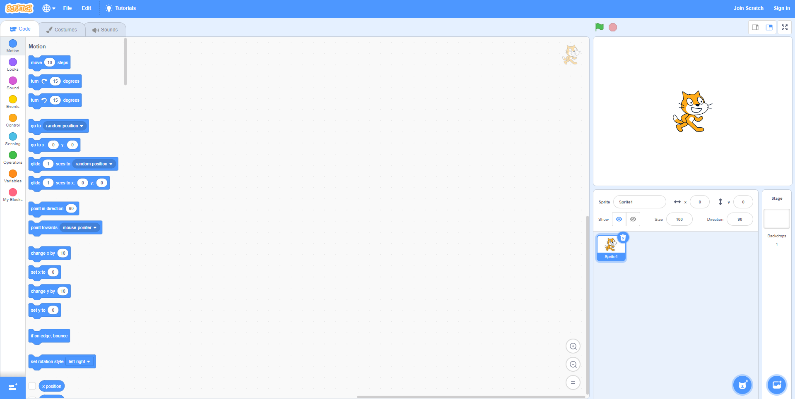

The scratch window is divided into several different areas. Scripts are built on the left, while the stage on the right shows the game running. On the far left you can access the tabs for blocks of code, and switch between code, costumes (looks) and sounds. Underneath the stage you can select different sprites (characters or objects) and rotate them, move them and rename them, as well as create more sprites. You can also select the background (backdrop) and add code to that. At the top of the screen you have a few menus. Select file and save to your computer to download and keep your projects safe! Make sure to save regularly.
